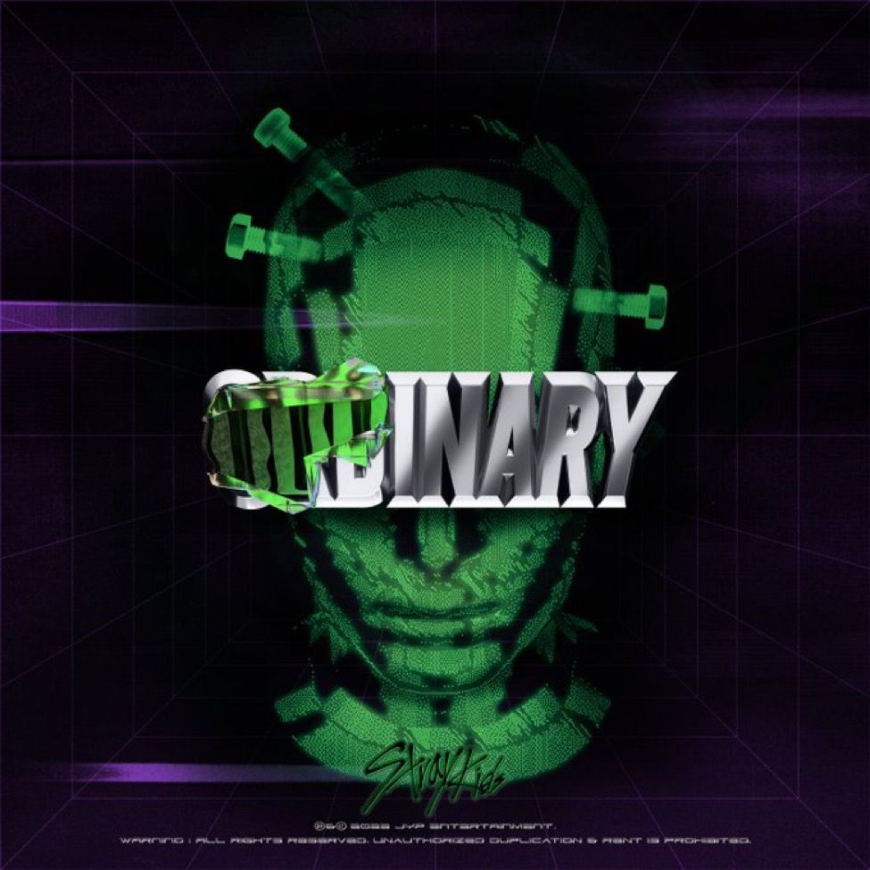
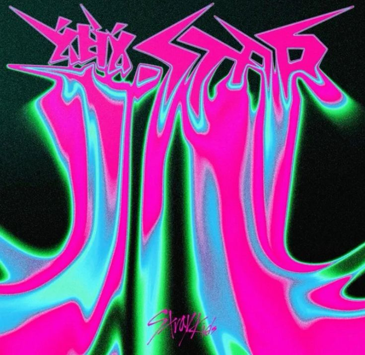
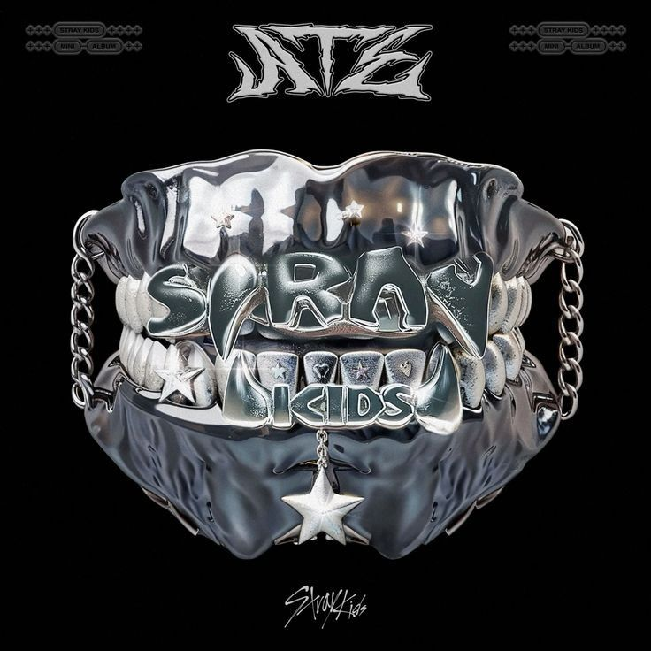
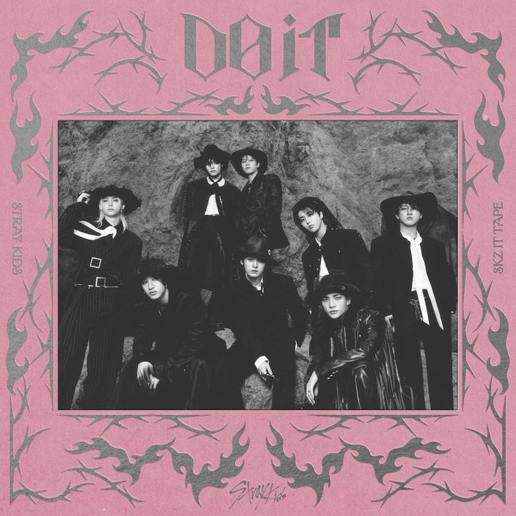

musicas do stray kids
s-class - 5-star
s-class lançou em 2 de junho de 2023 no album 5-star.
a musica conta com mais de 160M de streams em plataformas digitais

maniac - ODDINARY
maniac lançou em 18 de março de 2022 no album ODDINARY.
o clipe passou dos 300M de visualizações

lalala - ROCK-STAR
LALALA foi lançado em 10 de novembro de 2023 como faixa principal do álbum ROCK-STAR.
a musica ultrapassou 100M de streams apenas três meses após o lançamento.
Até pouco tempo atrás, já havia acumulado mais de 300M de streams

chk chk boom - ATE
chk chk boom foi lançada em 19 de julho de 2024 como faixa principal do mini-álbum ATE.
no spotify superou 100 milhões de reproduções pouco mais de um mês após o lançamento.

DO IT - DO IT
DO IT foi lançada em 21 de novembro de 2025, como faixa-título do álbum/mixtape SKZ IT TAPE: DO IT.
foi o último lançamento do stray kids que alcançou mais de 3,33 milhões de streams no Spotify só nas primeiras 24h
um dos maiores debuts da carreira do grupo